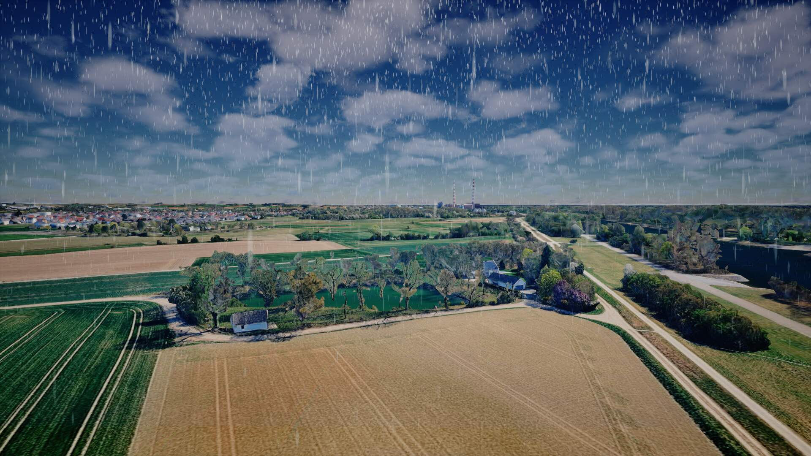
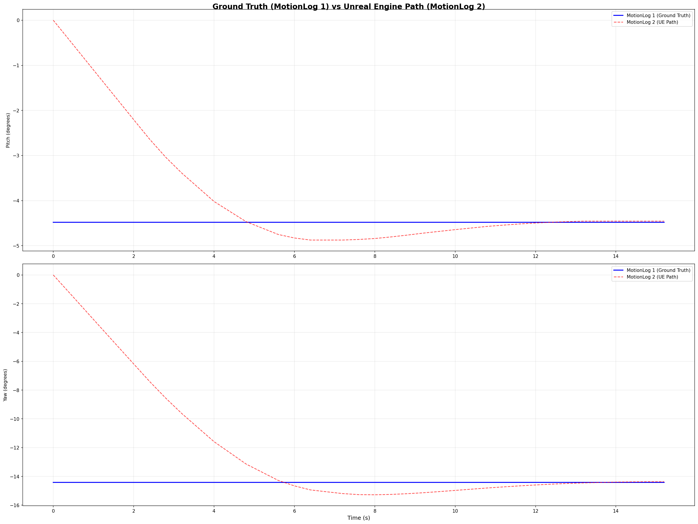
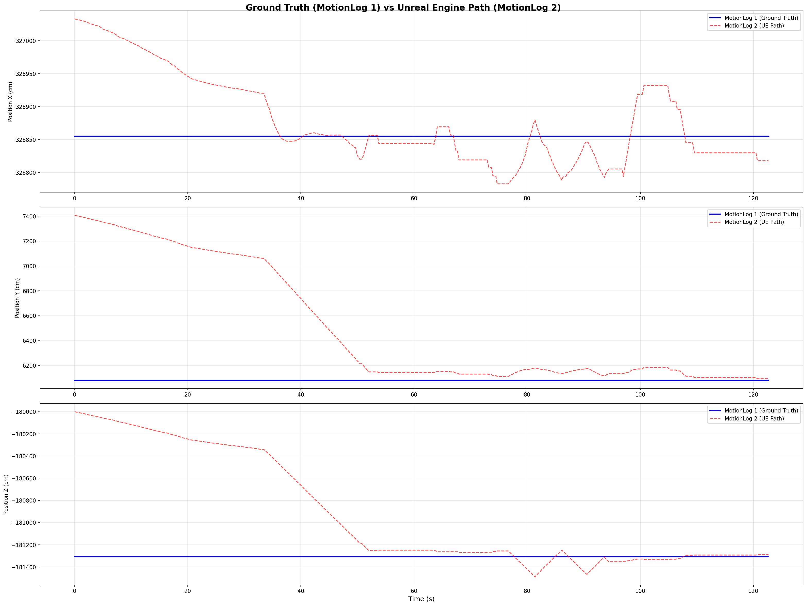

01
Project ENGEL: Vision-Based GPS-Denied UAV Repositioning
ENGEL · simulation
Real-time monocular pipeline for autonomous helicopter landing
in GPS-denied environments. Built the Unreal Engine 5 validation
environment, including a continuous image stream, UDP-based UAV
control, and simulated weather effects such as rain and snow for
repeatable testing. SuperPoint + LightGlue feature matching feeds
PNEC pose recovery; the resulting pose drives a sigmoid-mapped
velocity controller in a closed loop. Developed ONNX-exportable
SuperPoint and LightGlue inference pipelines for deployment across
different devices. Validated in UE5 simulation under clear and
adverse-weather scenarios; outdoor flight validation ongoing.
~10 cm lateral accuracy
~0.1° heading accuracy
Converges in <30 s
>98% image similarity
Clear + rainy sky validated



↗